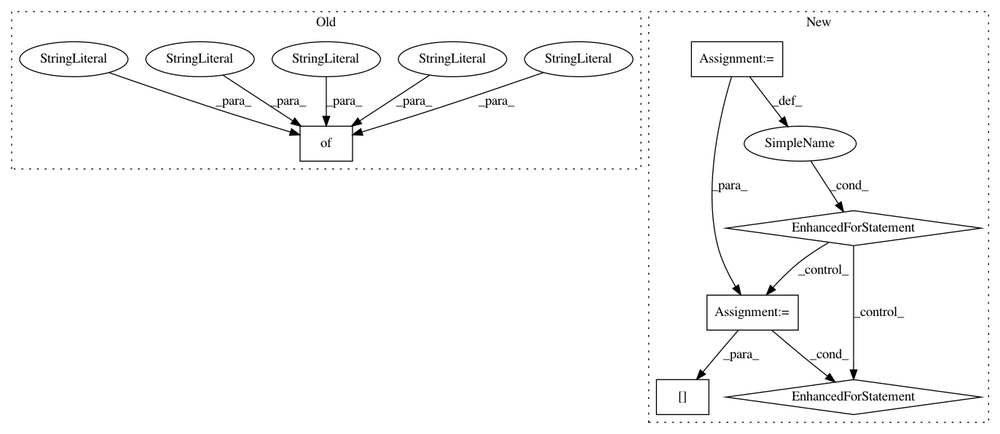

ae0138c4c9921c4280d20c0351d56ad6de448cfb,arviz/data/io_cmdstan.py,CmdStanConverter,_parse_posterior,#CmdStanConverter#,128
Before Change
parsed_output = _read_output(path)
for sample, sample_stats, config, adaptation, timing in parsed_output:
chain_data.append(
{
"sample": sample,
"sample_stats": sample_stats,
"configuration_info": config,
"adaptation_info": adaptation,
"timing_info": timing,
}
)
self.posterior = [item["sample"] for item in chain_data]
self.sample_stats = [item["sample_stats"] for item in chain_data]
After Change
)
attrs = {}
for item in chain_data:
for key, value in item["configuration_info"].items():
if key not in attrs:
attrs[key] = []
attrs[key].append(value)
self.attrs = attrs
@requires("prior_")
def _parse_prior(self):
In pattern: SUPERPATTERN
Frequency: 3
Non-data size: 6
Instances
Project Name: arviz-devs/arviz
Commit Name: ae0138c4c9921c4280d20c0351d56ad6de448cfb
Time: 2020-08-02
Author: ahartikainen@users.noreply.github.com
File Name: arviz/data/io_cmdstan.py
Class Name: CmdStanConverter
Method Name: _parse_posterior
Project Name: arviz-devs/arviz
Commit Name: ae0138c4c9921c4280d20c0351d56ad6de448cfb
Time: 2020-08-02
Author: ahartikainen@users.noreply.github.com
File Name: arviz/data/io_cmdstan.py
Class Name: CmdStanConverter
Method Name: _parse_prior
Project Name: lingpy/lingpy
Commit Name: a84938a83a0bc2bfc9fb6e377424d1547be0a054
Time: 2013-04-20
Author: bambooforest@gmail.com
File Name: lingpy/basic/spreadsheet.py
Class Name: Spreadsheet
Method Name: output